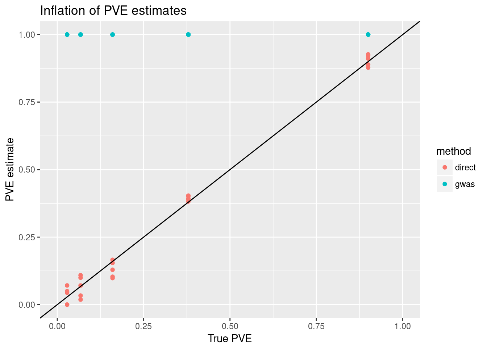
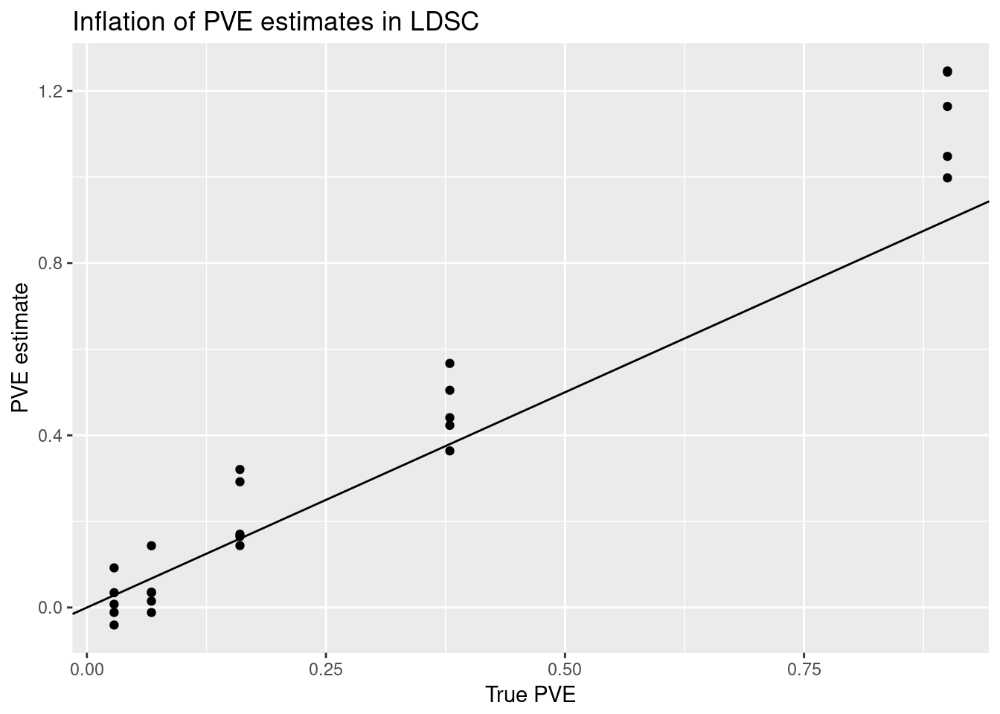
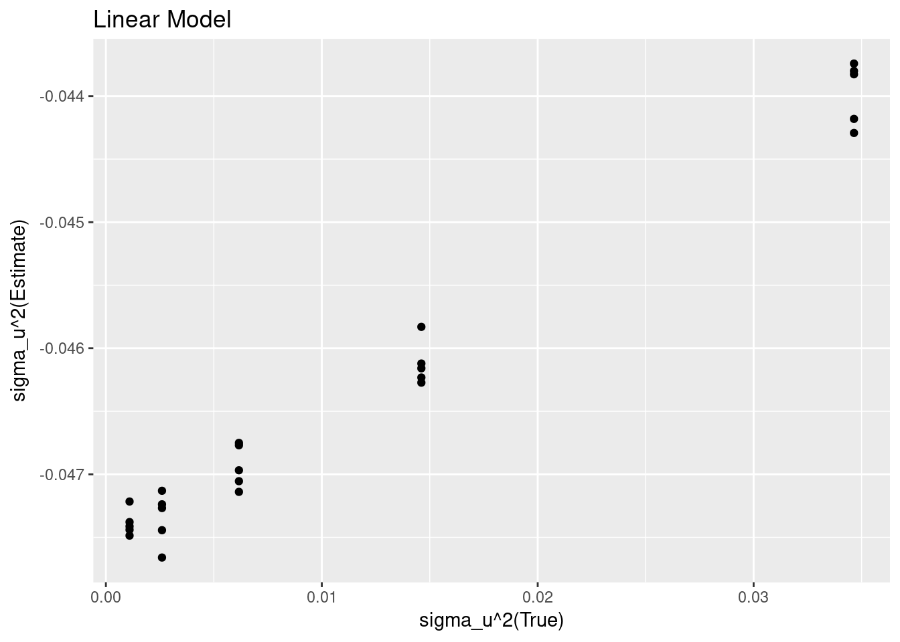
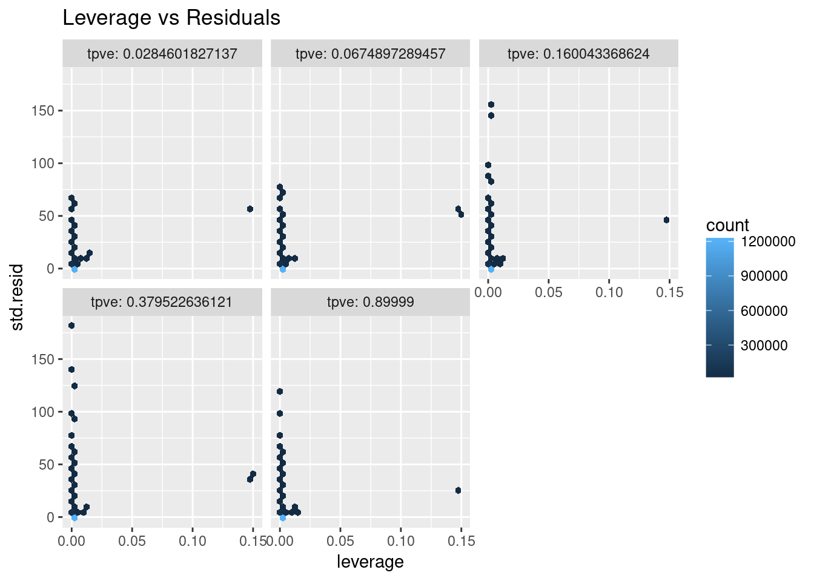
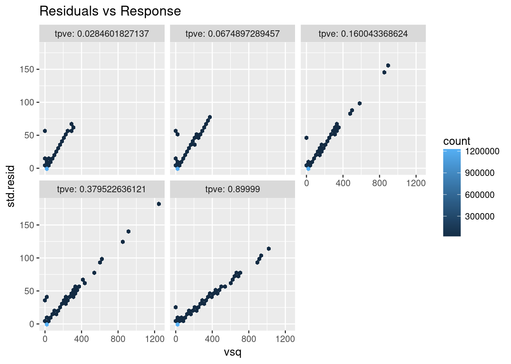
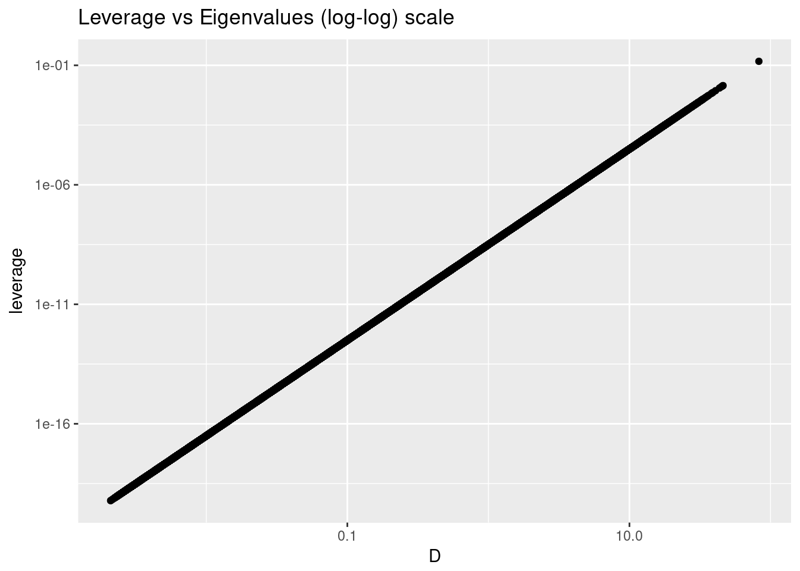
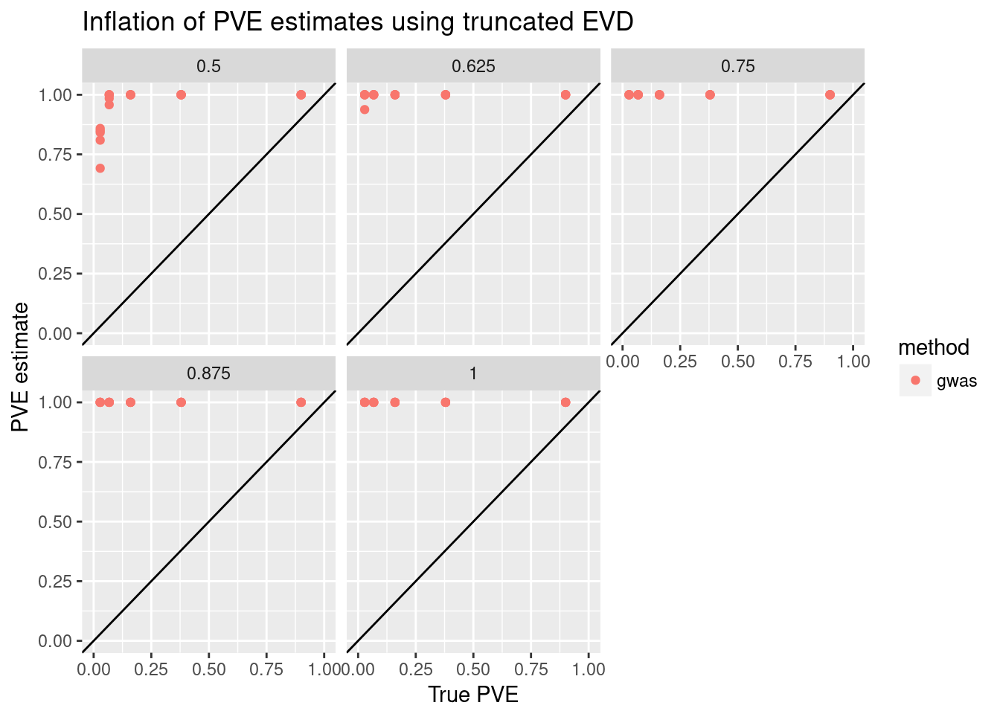

Last updated: 2018-02-21
Code version: d92b7d1
The simulation parameters were as follows
| pve | sigma_u | n_replicates |
|---|---|---|
| 0.0284602 | 0.0331010 | 5 |
| 0.0674897 | 0.0509730 | 5 |
| 0.1600434 | 0.0784947 | 5 |
| 0.3795226 | 0.1208761 | 5 |
| 0.8999900 | 0.1861404 | 5 |
I combined the RA and CAD wtccc datasets. The total number of SNPs is 250971 and total number of individuals is 9662.
In GWAS simulations, estimates of PVE are inflated. This is not the case for direct simulations. 
LD score regression shows inflation, but to a much smaller degree

An alternative to directly optimizing the marginalized likelihood is to estimate \(\sigma_u\) by moment matching. If \(v=Q^{T}\hat{u}\), then the idea is to fit the model \(v^2=\sigma_u^2\lambda^2+\lambda\).

One standard diagnostic of a linear model fit is to plot the leverage vs the residuals. From this we can see there are clearly some outliers.



One (possible) strategy for fixing this problem is to throw away eigenvectors/eigenvalues with small eigenvalues. The motivation being that in the situation where the (true) underlying matrix is rank deficient, the trailing eigenvectors/eigenvalues will only add noise, which will increase \(v^2\). Below I show the result of refitting the model using this approach. The panel heading perc_rank=0.5 indicates that top eigenvalues were taken until the cumulative total sum of the eigenvalues was half the total.

R version 3.4.3 (2017-11-30)
Platform: x86_64-pc-linux-gnu (64-bit)
Running under: Manjaro Linux
Matrix products: default
BLAS/LAPACK: /opt/intel/compilers_and_libraries_2018.1.163/linux/mkl/lib/intel64_lin/libmkl_gf_lp64.so
locale:
[1] LC_CTYPE=en_US.UTF-8 LC_NUMERIC=C
[3] LC_TIME=en_US.UTF-8 LC_COLLATE=en_US.UTF-8
[5] LC_MONETARY=en_US.UTF-8 LC_MESSAGES=en_US.UTF-8
[7] LC_PAPER=en_US.UTF-8 LC_NAME=C
[9] LC_ADDRESS=C LC_TELEPHONE=C
[11] LC_MEASUREMENT=en_US.UTF-8 LC_IDENTIFICATION=C
attached base packages:
[1] stats graphics grDevices utils datasets methods base
other attached packages:
[1] hexbin_1.27.2 broom_0.4.3 bindrcpp_0.2 EigenH5_1.0
[5] RSSp_0.9 forcats_0.2.0 stringr_1.2.0 dplyr_0.7.4
[9] purrr_0.2.4 readr_1.1.1 tidyr_0.8.0 tibble_1.4.2
[13] ggplot2_2.2.1 tidyverse_1.2.1
loaded via a namespace (and not attached):
[1] RcppEigen_0.3.3.3.1 tidyselect_0.2.3 reshape2_1.4.3
[4] haven_1.1.1 lattice_0.20-35 colorspace_1.3-2
[7] htmltools_0.3.6 yaml_2.1.16 rlang_0.1.6
[10] pillar_1.1.0 foreign_0.8-69 glue_1.2.0
[13] modelr_0.1.1 readxl_1.0.0 bindr_0.1
[16] plyr_1.8.4 munsell_0.4.3 gtable_0.2.0
[19] cellranger_1.1.0 rvest_0.3.2 libblosc_1.12.1
[22] psych_1.7.8 evaluate_0.10.1 labeling_0.3
[25] knitr_1.19 parallel_3.4.3 highr_0.6
[28] Rcpp_0.12.15 scales_0.5.0 backports_1.1.2
[31] jsonlite_1.5 mnormt_1.5-5 hms_0.4.1
[34] digest_0.6.15 stringi_1.1.6 grid_3.4.3
[37] rprojroot_1.3-2 cli_1.0.0 tools_3.4.3
[40] magrittr_1.5 lazyeval_0.2.1 crayon_1.3.4
[43] pkgconfig_2.0.1 Matrix_1.2-12 xml2_1.2.0
[46] lubridate_1.7.1 assertthat_0.2.0 rmarkdown_1.8
[49] httr_1.3.1 rstudioapi_0.7 R6_2.2.2
[52] nlme_3.1-131 git2r_0.21.0 compiler_3.4.3 This R Markdown site was created with workflowr